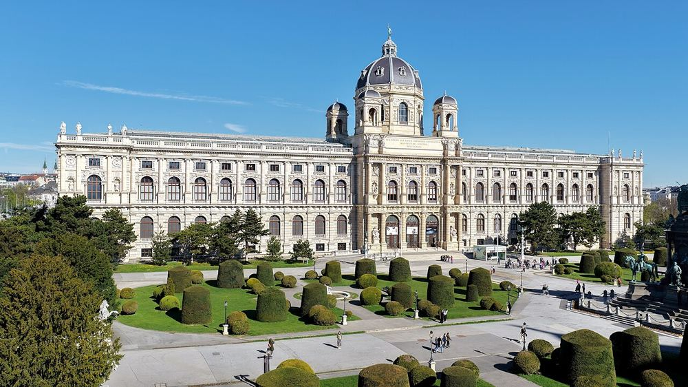

Muséum d'histoire naturelle
La salle des dinosaures, avec un allosaure animé, est le grand moment. Gratuit pour les moins de 19 ans.


Ce que les enfants vont aimer
Des squelettes de dinosaures et un dinosaure qui bouge.
Fermé le mardi. Le plus calme : en semaine l'après-midi.
Autour du lieu
Toilettes, tables à langer, aires de jeux, eau potable, pharmacie et station les plus proches, avec le temps de marche.
- Toilettes : Toilettes publiques, à 6 min à pied (240 m) · accès fauteuil
- Toilettes : Toilettes publiques, à 9 min à pied (360 m) · gratuit
- Table à langer : Toilettes avec table à langer, à 4 min à pied (160 m) · payant · accès fauteuil
- Table à langer : Toilettes avec table à langer, à 5 min à pied (200 m) · payant · accès fauteuil
- Aire de jeux : Aire de jeux, à 6 min à pied (220 m)
- Aire de jeux : Aire de jeux, à 9 min à pied (350 m)
- Eau potable : Point d'eau potable, à 4 min à pied (160 m)
- Pharmacie : Babenberger-Apotheke, à 11 min à pied (420 m) · accès fauteuil
- Station : Volkstheater, à 2 min à pied (80 m) · accès sans marche signalé
D'après OpenStreetMap, non vérifié sur place.
À combiner dans la journée
ZOOM, musée des enfants
Un musée où l'on joue, construit et invente.
À 6 min à pied (240 m) · 0–14 ans
Haus des Meeres, l'aquarium
Des requins et des singes dans une grande tour.
À 26 min à pied (1,0 km) · 0–14 ans
Cathédrale Saint-Étienne
Un toit de tuiles qui dessine des aigles en couleur.
À 27 min à pied (1,0 km) · 4–14 ans
Questions fréquentes
Muséum d'histoire naturelle : à partir de quel âge ?
Nous le conseillons de 3 à 14 ans. Des squelettes de dinosaures et un dinosaure qui bouge.
Muséum d'histoire naturelle : combien de temps prévoir ?
Environ 2 h 30 sur place, sans compter le trajet.
Muséum d'histoire naturelle : quand y aller pour éviter la foule ?
Fermé le mardi. Le plus calme : en semaine l'après-midi.
Muséum d'histoire naturelle : peut-on y aller avec une poussette ?
Facile en poussette. Beaucoup de rues pavées autour; beaucoup d'escaliers dans le quartier (52 recensés à moins de 250 m); station la plus proche : Volkstheater, à 80 m, accès sans marche signalé; 14 ascenseurs publics signalés à moins de 400 m.
Muséum d'histoire naturelle : comment y aller ?
Burgring 7, 1010 Wien. Métro U2 ou U3, station Volkstheater.
Fiche vérifiée le 29 octobre 2026. Horaires, tarifs et conditions d'accès changent souvent : vérifiez toujours sur le site officiel avant de partir. Tous les lieux de Vienne avec des enfants.